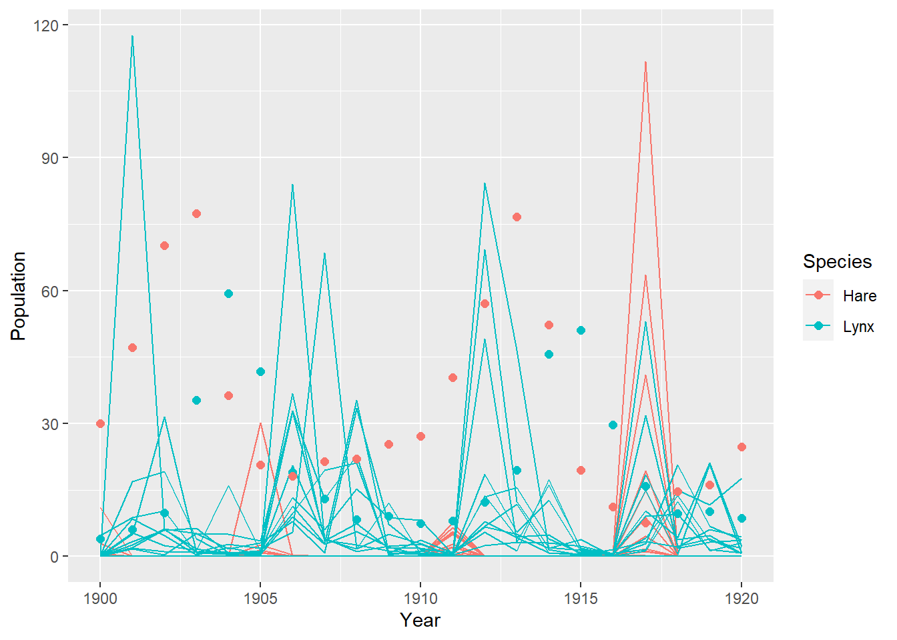

Chapter 16 Generalized Linear Madness
16.1 Chapter Notes
This chapter goes beyond generalised linear models, introducing examples of structural, causal models more informed by scientific theory.
Geometric People
The chapter introduces a simple example of a structural model. In chapter 4, we used people’s weight to predict their heights. But we know more about the relationship between weight and height, and we can give our model this information. One way to do this would be to assume a person is roughly a cylinder, we would have the following equation relating volume to height:
\[ V = \pi r^2 h. \]
We don’t have data on the radius of our population; we assume it is some fixed proportion \(p\) of height. We further assume that there is a fixed ratio between volume and weight. We have:
\[ W = kV = k\pi p^2 h^3. \]
Here’s the model we fit:
\[ \begin{aligned} W_{i} &\sim \text{Log-Normal}(\mu_{i},\sigma_{i}) \\ \exp(\mu_i) &= k \pi p^2 h_i^3 \end{aligned} \] We use the log-normal since we know weight must be non-negative. One benefit of a structural model is that the parameters have scientific meaning, and so it can be easier to assign priors. E.g the chapter uses \(\text{Beta}(2,18)\) as a prior for \(p\) since we know that it must be between zero and one and is likely below 0.5. The meaning of \(k\) is something like density, and we can assign reasonable priors accordingly. You could also set sensible priors by dividing out the units in the volume equation above by e.g. dividing both weight and height by their averages. Then you can get a good guess at \(k\) for a person of average height and weight, and set priors informed by this value.
Here are the parameter estimates:
## mean sd 5.5% 94.5% n_eff Rhat4
## p 0.2480813 0.059571721 0.1666790 0.3570929 480.9952 1.003791
## k 5.7687082 2.732428741 2.3756432 10.7833260 504.3511 1.003261
## sigma 0.2069715 0.006224872 0.1974887 0.2167353 717.9134 1.002929Let’s plot the posterior predictions:
The blue dots are the raw data, the shaded region is the 89% compatibility interval.
The exponent of height on weight is not estimated by the model, it is fixed at 3 by our cylinder model, but it performs well. The chapter notes that with a theoretically informed model, deviations can tell us something about the process - e.g. the model fits poorly at low heights, this may be because either \(p\) or \(k\) is different for children than adults.
Ordinary Differential Nut Cracking
This example I’ll go into a little more. It uses data on chimpanzees who try to crack open nuts using tools, and it uses ordinary differential equations in the way that scientific theory informs the model. That said, it’s not a very different approach than the cylinder weight example above because the ODE has a simple analytical solution.
The first model the chapter tries is one in which only strength matters for rate of nut opening. Let’s assume that strength is proportional to mass. We have theory about how mass of chimpanzees change as they age: they have a maximum potential mass, and the rate of mass increase depends on how far away they are from that maximum:
\[ \frac{\text{d}M}{\text{d}t} = k (M_\text{max} - M_t) \]
which is an ordinary differential equation with solution:
\[ M_t = M_\text{max}(1- \exp(-kt)) \]
We also have that strength is proportional to mass \(S = \beta M_t\) and we also want to define some function to relate strength to rate of nut cracking \(\lambda\). The chapter chooses one that allows increasing returns to strength \(\lambda = \alpha S^\theta\). All together:
\[ \lambda = \alpha S^\theta = \alpha (\beta M_\text{max}(1- \exp(-kt)))^\theta. \]
We make simplifications by rescaling mass so that maximum body mass is one. We can also use replace \(\alpha \beta^\theta\) by \(\phi\) since that term just rescales units. We have:
\[ \lambda = \phi (1- \exp(-kt))^\theta. \]
We then fit a model for number of nuts cracked using a Poisson likelihood, where \(lambda\) defines our rate of nut cracking. Our predictor is age.
We plot the posterior.
The blue circles are the raw data, scaled by the number of seconds particular trial lasted. The lines are drawn from the posterior.
Population Dynamics
In this example, the ODEs used have no analytical solution. We are modelling population dynamics of hare and lynx.
We have:
\[ \frac{\text{d}H}{\text{d}t} = H_t b_H - H_t L_t m_H = H_t (b_H - L_t m_H) \] where:
- \(H_t\) is the population of hare at time \(t\).
- \(b_H\) is the hare birth rate
- the term \(L_t m_H\) is the hare death rate, which is influenced by the population of lynx \(L_t\).
Similarly, for the lynx:
\[ \frac{\text{d}L}{\text{d}t} = L_t (H_t b_L - m_L). \]
In this case we assume the lynx birth rate depends on the number of hare, and the death rate is constant. This is the Lotka-Volterra model.
We want a statistical model using these dynamics. One problem though is that our data does not contain true populations of hare and lynx, it contains counts of pelts. We write a model that assumes some proportion of the animal population was trapped each year, with some error term. Our data cannot tell us the proportion of animals that were captured, so we have to fix it using a prior. The chapter points out that although this is not ideal, it is better that our model forces us to grapple with the limitations of the data rather than naively use the pelt data as if they were true population counts. The model is this:
\[ \begin{aligned} h_{t} &\sim \text{Log-Normal}(\log(p_HH_t),\sigma_{H}) \\ l_{t} &\sim \text{Log-Normal}(\log(p_LL_t),\sigma_{L}) \\ H_{T>1} &= H_1 + \int^T_1 H_t(b_H - L_t m_H)\text{dt} \\ L_{T>1} &= L_1 + \int^T_1 L_t(H_t b_L - m_L)\text{dt} \end{aligned} \] where:
- \(h_t\) and \(l_t\) are the observed populations
- \(H_t\) and \(L_t\) are the true populations
- \(p_H\) and \(p_L\) are the proportions of the true population captured each year, fixed by some beta prior
We make use of Stan’s built-in functions for numerically solving differential equations. Here’s the model code:
## functions {
## real[] dpop_dt( real t, // time
## real[] pop_init, // initial state {lynx, hares}
## real[] theta, // parameters
## real[] x_r, int[] x_i) { // unused
## real L = pop_init[1];
## real H = pop_init[2];
## real bh = theta[1];
## real mh = theta[2];
## real ml = theta[3];
## real bl = theta[4];
## // differential equations
## real dH_dt = (bh - mh * L) * H;
## real dL_dt = (bl * H - ml) * L;
## return { dL_dt , dH_dt };
## }
## }
## data {
## int<lower=0> N; // number of measurement times
## real<lower=0> pelts[N,2]; // measured populations
## }
## transformed data{
## real times_measured[N-1]; // N-1 because first time is initial state
## for ( i in 2:N ) times_measured[i-1] = i;
## }
## parameters {
## real<lower=0> theta[4]; // { bh, mh, ml, bl }
## real<lower=0> pop_init[2]; // initial population state
## real<lower=0> sigma[2]; // measurement errors
## real<lower=0,upper=1> p[2]; // trap rate
## }
## transformed parameters {
## real pop[N, 2];
## pop[1,1] = pop_init[1];
## pop[1,2] = pop_init[2];
## pop[2:N,1:2] = integrate_ode_rk45(
## dpop_dt, pop_init, 0, times_measured, theta,
## rep_array(0.0, 0), rep_array(0, 0),
## 1e-5, 1e-3, 5e2);
## }
## model {
## // priors
## theta[{1,3}] ~ normal( 1 , 0.5 ); // bh,ml
## theta[{2,4}] ~ normal( 0.05, 0.05 ); // mh,bl
## sigma ~ exponential( 1 );
## pop_init ~ lognormal( log(10) , 1 );
## p ~ beta(40,200);
## // observation model
## // connect latent population state to observed pelts
## for ( t in 1:N )
## for ( k in 1:2 )
## pelts[t,k] ~ lognormal( log(pop[t,k]*p[k]) , sigma[k] );
## }
## generated quantities {
## real pelts_pred[N,2];
## for ( t in 1:N )
## for ( k in 1:2 )
## pelts_pred[t,k] = lognormal_rng( log(pop[t,k]*p[k]) , sigma[k] );
## }The functions block at the top includes the specification of the differential equations. Stan’s integrate_ode_rk45 function does the integration in the transformed parameters block.
We run the model, and plot the results:

16.2 Questions
Further Reading
Endnote 233 recommends a few articles about the philosophy of model building:
- The strategy of model building in population biology - Levins (1966)
- Using false models to elaborate constraints on processes: Blending inheritance in organic and cultural evolution. - Wimsatt (2002)
- Models are stupid, and we need more of them. - Smaldino (2017)